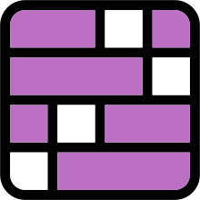

How to use
Open Settings from the status bar icon.
Your stats & calendar
Open:Expand Calendar & stats in the extension popup.
Record:Hard Sudoku and Daily Crossword save automatically. Uncheck Record this time to skip.
Colors:Green: fastest 25%Yellow: middle 50%Red: slowest 25%One result or identical times stay yellow.
Export:Choose Data & sync → Export history to download your dates and times as JSON.
Storage:Updates preserve your times.
Sync:Use the same Chrome account. Enable sync before Clear history to remove synced copies.

ConnectionsCorner marks:Click a corner to add or remove a mark.
Categories:Click to filter a color; click again to show all. × clears its marks; double-click to rename.
Difficulty:Shows the published NYT rating above the board when available.
Tries:Click the history icon to view your submissions.
Sudoku
Snyder:Enter candidates in a cell’s corners.
Center:Enter candidates in the center of a cell.
Mode keys:Set hotkeys for Play, Snyder, and Center.
Wordle
Clue warnings:Letters turn red when they conflict with revealed clues.
Click to edit:Click any cell in your current guess to edit it.
Crossword
Try letters A–Z:Select a square, then click A–Z beside Rebus to try letters as fast as the game allows.
Notes:Click Notes or press your hotkey to add candidate letters to empty squares.
Pencil shortcut:Press your hotkey to toggle Pencil mode.